The Relate operator allows you to create custom relational operations using a Dimensionally Extended Nine-Intersection Model, DE-9IM, formatted string.
All of the predefined relational operations can be defined (Contains, Crosses, Disjoint, Equals, Intersects, Overlaps, Touches, and Within)
using OperatorRelate, but it offers much more. A review of the predefined relational operations can be found at
Performing relational operations.
An explanation of DE-9IM and examples are given below. More information about DE-9IM can be found at https://en.wikipedia.org/wiki/DE-9IM or by downloading the OGC specification “OpenGIS Simple Features Specification For SQL Revision 1.1” from http://www.opengis.org.
For any geometry A, let I(A) be the interior of A, B(A) be the boundary of A, and E(A) be the exterior of A. For any set, x, of geometries, let dim(x) be the maximum dimension (-1, 0, 1, or 2) of the geometries in x where -1 is the dimension of the empty set. A DE-9IM has the following form:
| 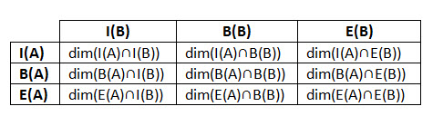 |
For example, consider two overlapping polygons and the associated DE-9IM.
| 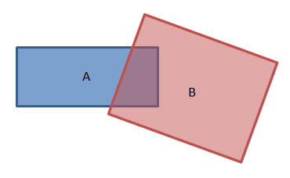 |
| 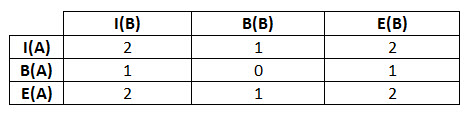 |
The intersection of the interiors, I(A) ⋂ I(B), is a polygon which has dimension 2. The intersection of the interior of A and the boundary of B, I(A) ⋂ B(B), is a line which has dimension 1 and so forth.
A pattern matrix represents all acceptable values for the DE-9IM of a spatial relationship predicate on two geometries. The possible pattern values for any cell such that x is the intersection set are {T, F, *, 0, 1, 2} where
- T ⇒ dim(x) ∈ {0, 1, 2}, i.e. x is not empty
- F ⇒ dim(x) = -1, i.e. x is empty
- * ⇒ dim(x) ∈ {-1, 0, 1, 2}, i.e. don't care
- 0 ⇒ dim(x) = 0
- 1 ⇒ dim(x) = 1
- 2 ⇒ dim(x) = 2
The pattern matrix can be represented as a string of nine characters listed row by row from left to right. For example, the pattern matrix given above for overlapping polygons can be represented by the string “212101212”. The string representing two geometries, not necessarily polygons, that overlap is “T*T***T**”.
The OperatorRelate.execute function has the following signature:
boolean execute(Geometry g1, Geometry g2, SpatialReference sr, String relateString, ProgressTracker progressTracker)
|
where relateString is a string representation of a pattern matrix.
If the spatial relationship between the two geometries corresponds to the values as represented in the string, then the Relate operator returns true. Otherwise, the Relate operator returns false.
In the following examples the blue geometry is Geometry A, and the red geometry is Geometry B.
Example 1: Does Geometry A contain Geometry B?
Recall that Geometry A contains Geometry B if:
- Geometry B is a subset of Geometry A and
- their interiors have at least one point in common
Clearly, for Geometry A to contain Geometry B the set, I(A) ⋂ I(B), representing the intersection of the interiors must not be empty. Also, if no part of B is outside of A, then the intersection of the exterior of A with the interior of B and the boundary of B should be empty. In other words, E(A) ⋂ I(B) must be empty, and E(A) ⋂ B(B) must be empty. There are no other requirements so the rest of the cells are filled with *.
| 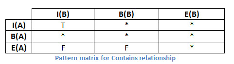 |
The string that you pass to the Relate operator is “T*****FF*”.
Example 2: Does Geometry A completely contain Geometry B?
The power of the GeometryEngine.Relate method is that you can create custom relationships. Suppose you want to know if A completely contains B.
| 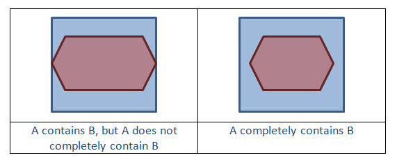 |
As before, B must be a subset of the interior of A so, I(A) ⋂ I(B)) must not be empty, E(A) ⋂ I(B) must be empty, and E(A) ⋂ B(B) must be empty (or T*****FF*).
Now there is the extra requirement that Geometry A completely contains Geometry B. This means that the boundary of A must not intersect the interior or the boundary of B. In other words, the intersection of the boundary of A with the interior of B and the boundary of B must be empty or B(A) ⋂ I(B) must be empty and B(A) ⋂ B(B) must be empty. We add two more entries to the DE-9IM matrix giving:
| 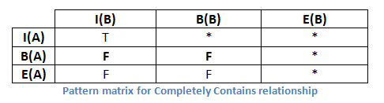 |
The string that you pass to the Relate operator is now “T**FF*FF*”.
Example 3: Does Geometry A touch Geometry B?
Recall that two geometries, A and B, touch if the intersection of their interiors is empty, but the intersection of A and B is not empty. The first requirement is that the intersection of their interiors, I(A) ⋂ I(B), is empty. Given the first requirement, what does it mean to say that the intersection of A and B is not empty? It means that one of the following must be true:
- boundary of A intersect interior of B is not empty
- interior of A intersect boundary of B is not empty
- boundary of A intersect boundary of B is not empty
Case 1: Boundary of A intersect interior of B is not empty
The DE-9IM matrix for this case is
| 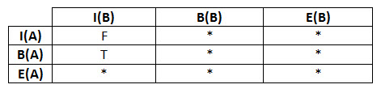 |
The string that you pass to the Relate operator is “F**T*****”.
What geometry types does this case apply to? The boundary of A is not empty, so we know that A is not a point or a multipoint. Therefore, A is a polygon or a polyline. B cannot be a polygon because then the interiors would intersect. If A is a polygon, then B must be a point or multipoint. If A is a polyline, then B must be a point, multipoint, or polyline.
| 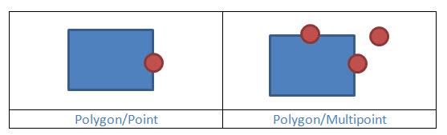 |
| 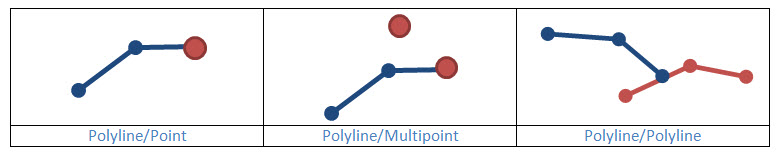 |
Case 2: Interior of A intersect boundary of B is not empty
The DE-9IM matrix for this case is
| 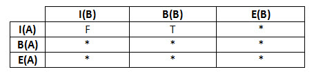 |
The string that you pass to the GeometryEngine.Relate method is “FT*******”.
Case 2 is the inverse of Case 1. B is a polygon or polyline. If B is a polygon, then A is a point or multipoint. If B is a polyline, then A is a point, multipoint, or a polyline.
Case 3: Boundary of A intersect boundary of B is not empty
The DE-9IM matrix for this case is
| 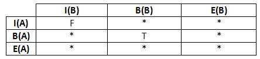 |
The string that you pass to the Relate operator is “F***T****”.
What geometry types does this case apply to? Neither A nor B has an empty boundary, so both A and B must be a polygon or a polyline.
| 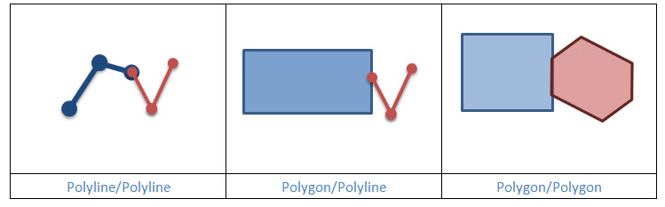 |
The relate string for “Touches” is “F**T*****” or “FT*******” or “F***T****”. Which string you use depends on the geometry types. For example, to find out if Point A touches Polygon B, you pass the string “FT*******” to the Relate operator.
Example 4: Polygon A touches Polygon B at points only
From Example 3, you know that the relate string for Polygon A touches Polygon B is “F***T****”. Now you are specifying that not only do their boundaries intersect, they intersect at points only. In other words, the dim(B(A) ⋂ B(B)) = 1.
 |
The DE-9IM matrix for this case is
| 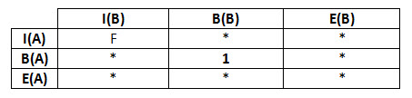 |
The string that you pass to the Relate operator is “F***1****”.
Example 5: Polyline A is disjoint from Multipoint B
In this example, you want to know if Geometry A and Geometry B are disjoint but only if A is a polyline and B is a multipoint.
| 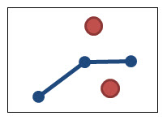 |
Clearly, the interiors and boundaries must not intersect. This is the matrix so far.
| 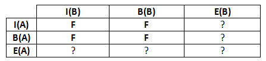 |
Notice that the intersection of the interior of A and the exterior of B is equal to A. In other words, I(A) ⋂ E(B) = A and dim(A) = 1. You can fill in another cell of the matrix.
| 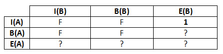 |
The intersection of the boundary of A and the exterior of B is equal to the boundary of A or B(A) ⋂ E(B) = B(A). The boundary of A is the set of endpoints of the polyline so dim(B(A)) = 0. Another cell gets filled in.
| 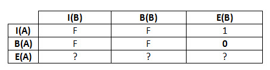 |
Looking at the last row in the matrix, you see that E(A) ⋂ I(B) = B, E(A) ⋂ B(B) is the empty set, and E(A) ⋂ E(B) is everything except A and B.
The completed DE-9IM matrix is
 |